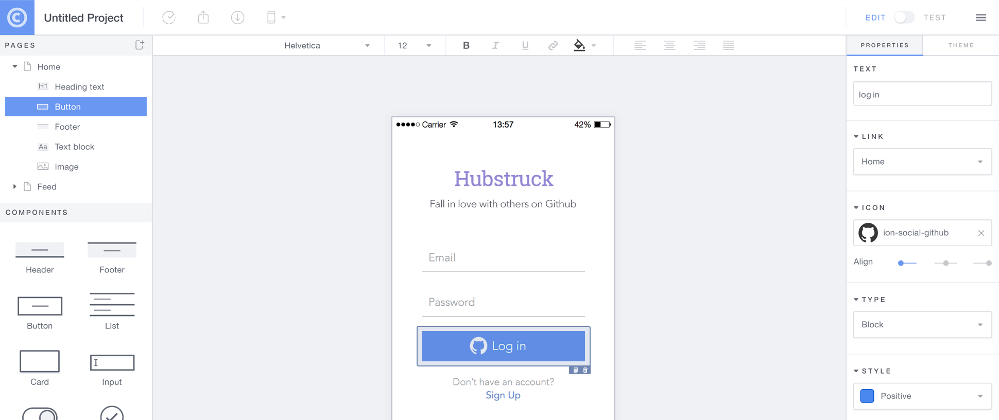

Construyendo Apps Hibridas con AngularJS y Ionic
Carlos Rojas
Co-founder Sponzor.Me
@carlosrojas_o
¿Que vamos a hablar?
- Nativo vs Apps Hibridas
- Introduccion a Ionic
- Componentes del UI
- Ionic CLI
- Demos
“Yo quiero un App Nativa!”
Las desventajas de Nativo.
- Conocimiento en cada plataforma requerida.
- Bases de código totalmente independientes.
- El Desarrollo toma tiempo.
- Decremento pobre.
Mas Plataformas. Mas Problemas.


Por que aun estamos programando para multiples plataformas?
“Existe alguna alternativa?”

- Apps Hibridas: HTML5 que actua como nativo
- Phonegap se renombro a Cordova
- WEB encapsulado en una capa nativa
- Acceso directo a APIs nativas
- Un entorno WEB de desarrollo familiar
- Desarrollo con un simple codigo base.
“Oh No! Zuck ha hablado!”

http://techcrunch.com/2012/09/11/mark-zuckerberg-our-biggest-mistake-with-mobile-was-betting-too-much-on-html5/
Tu estas construyendo la App de Facebook?
- Tiene un presupuesto multimillonario?
- Tienes un equipo de experimentados desarrolladores nativos?
- Tus utilidades de billones de dolares dependen de esta App?
- Si es asi... hazlo nativo
- ...pero en estos dias no todo es blanco y negro
“Las Apps Hibridas son lentas!”
“Los Tiempos han cambiado”
“No estamos en el 2007”
Los dispositivos moviles han sido rapidamente mejorados!
| Año | Dispositivo | Procesador | RAM |
|---|---|---|---|
| 2007 | iPhone | 620 MHz | 128 MB |
| 2010 | iPhone 4 | 1 GHz | 512 MB |
| 2015 | iPhone 6 | 1.4 GHz dual-core | 1 GB |
Los estandares WEB han estado mejorando rapidamente!
- caniuse.com se ve muy bien estos dias
- Android es ahora Chromium-based
- Los usuarios de iOS mantienen su dispositivos actualizado

https://mixpanel.com/trends/#report/ios_8/from_date:-141,report_unit:day,to_date:0

https://mixpanel.com/trends/#report/android_os_adoption
Los SDKs nativos son grandiosos
- Comun UI
- Vistas
- Navegacion y historial del stack
- Transiciones
- Gestos
No hay un WEB SDK
- Es el Salvaje Oeste para las Apps Hibridas
- Necesitamos un puente en la fisura entre WEB y Nativo
- Necesitamos un rico, Componentes de UI de apariencia nativa y interacciones
- Necesitamos UI APIs, No solo JQuery Widgets
“Hola.”
“Enfocate en construir tu App, No en como deberia funcionar.”
Tecnologias Web que tu ya conoces y Amas


(Te sientes como en casa)
http://www.google.com/trends/explore#q=angularjs%2C%20ember.js%2C%20knockoutjs%2C%20backbonejs&date=8%2F2011%2037m&cmpt=q
Apoyado en los hombros de AngularJS
- Probado por desarrollo de webapp a gran escala
- Extiende el Vocabulario HTML
- Componentes de UI usando Directivas y Servicios
Enfocado en Nativo
- Siguiendo el modelo de los SDKs Nativos
- Construido para trabajar con Cordova
Obsesionado con el rendimiento
- Animaciones aceleradas por Hardware
- Manipulacion minima del DOM
- Removido el atraso de 300ms tap
CSS Plano
- Sistema visual cohesivo
- Limpio y Simple
- Facil de personalizar
- Stand-alone CSS (independiente del JavaScript de Ionic)
- ionicframework.com/docs/components
- CSS generado del preprocesador Sass
- Rapidamente le da a tu app su propia apariencia
- CSS diseñada para ser facilmente sobreescrita
- Basado en variable por defecto
- Mas de 80 reusables y utiles mixins
Ionicons

Mas de 700 font-icons con licencia MIT incluidos
Como se ve todo junto?
- Tu App
- Ionic
- Angular
- WebView (Cordova)
- Native App
Adopcion de Ionic
- 14,000+ Github Stars
- Top 50 entre los repos de Github con estrella
- Consistente Top 10 de los JS Github Repos que son tendencia
- Promedio de 2,300 descargas/dia del Ionic CLI
- 400,000+ Ionic apps han sido comenzados desde el CLI
- Liberado Alpha: Noviembre 2013
- Liberado Beta: Marzo 2014
- Version Candidate: Invierno 2015
Vision General de los Componentes UI
Listas
Listas Complejas
- Directivas de AngularJS
- Interaccion de los botones por swiping
- Reorden
- Eliminar
List Item {{ item.id }}
Collection Repeat
- Similar a Angular's
ng-repeat - Inspirado por el UICollectionView de IOS
- Scroll a traves de miles de items
- Solo renderiza los elementos visibles
- Scrolling fluido sin libre de cosas innecesarias
{{ c.name }}
{{ c.email }}
Navegacion
- Uso de AngularUI Router
- Muestra boton de regreso cuando es posible
- Transicion para seguir la direccion de la navegacion
- Trabaja con el Boton de Regresar de Android
Back
Tabs
- Vistas anidadas
- Cada pestaña tiene su propio historial de navegacion
- Abstract states en AngularUI Router
Side Menu
Left Menu
...
Slide Box
Slide 1
Slide 2
Slide 3
Action Sheet
- Un Servicio de AngularJS
- Inyecta dentro de los controladores
$ionicActionSheet.show({
titleText: 'Action Sheet Example',
buttons: [
{ text: 'Share' },
{ text: 'Move' },
],
destructiveText: 'Delete',
cancelText: 'Cancel',
buttonClicked: function(index) {
console.log('BUTTON CLICKED', index);
return true;
}
});Popover
- Un Servicio de AngularJS
- Plantilla Inline o external
$ionicPopover.fromTemplateUrl('popover.html',
function(popover) {
$scope.popover = popover;
}
);
My Popover Title
Hello!
Modal
- Un Servicio de AngularJS
- Plantilla Inline o external
$ionicModal.fromTemplateUrl('modal.html', {
scope: $scope
}).then(function(modal) {
$scope.modal = modal;
});Jalar para actualizar
Ionic Creator
Ionic View App
$ npm install -g ionic
_ _
(_) (_)
_ ___ _ __ _ ___
| |/ _ \| '_ \| |/ __|
| | (_) | | | | | (__
|_|\___/|_| |_|_|\___| CLI
- Rapidamente crea un proyecto con las plantillas de Inicio
- Estructura Boilerplate app lista para personalizar
- Herramientas preconfiguradas: Gulp, Sass, Bower, etc.
- Inicia un servidor local dev con LiveReload
- Actualiza archivos Ionic Framework library
- Construye y ejecuta Apps nativas
Ionic CLI
$ npm install -g ionic cordova$ ionic start myapp sidemenu$ cd myapp$ ionic serve
Demo Time!
Que los dioses de los demos esten con nosotros
Pruebas en Ionic Angular
- Es solo una app de AngularJS!
- Configura con una gran separacion de Preocupaciones
- Karma unit tests
- Protractor e2e tests
Ionic Showcase

MIT LICENSED
Free to use (even commercially)
EMPODERADA POR LA COMUNIDAD
Foro de desarrolladores activos, IRC and GitHub repo
Comenzando con Ionic!
Guia de Inicio
ionicframework.com/getting-started
Documentacion
ionicframework.com/docs
Visita el foro de la comunidad
forum.ionicframework.com
Contribuir en Github
github.com/driftyco/ionic